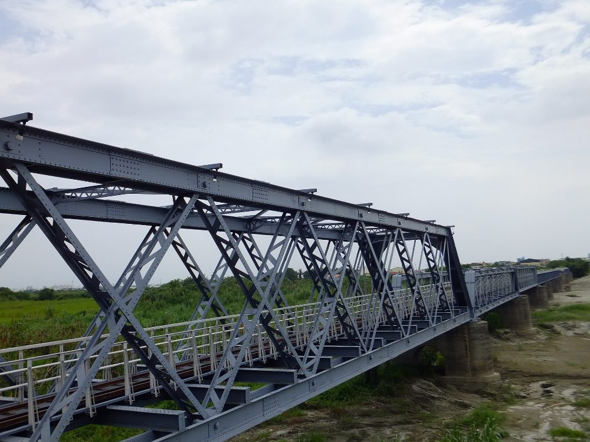
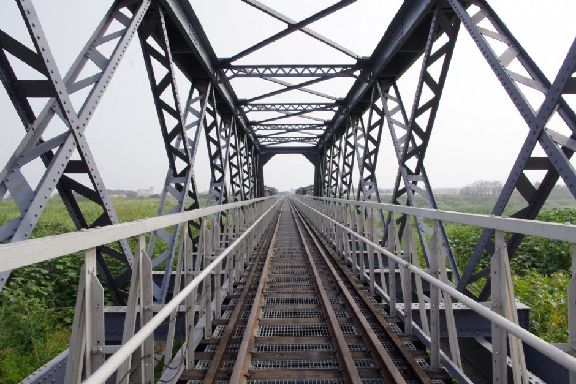

回家作業：同一個地標，拍 6 種樣子
每組 ≥ 20 張
① 正面

② 斜側面
③ 遠景
④ 招牌 / 近景細節

⑤ 走進去 / 室內
⑥ 陰天 / 傍晚 / 有人擋
4-learn · 虎科同學
 ① 正面
① 正面 ③ 遠景
③ 遠景 ④ 招牌 / 近景細節
④ 招牌 / 近景細節 ⑥ 陰天 / 傍晚 / 有人擋① 正面③ 遠景④ 招牌 / 近景細節⑥ 陰天 / 傍晚 / 有人擋
⑥ 陰天 / 傍晚 / 有人擋① 正面③ 遠景④ 招牌 / 近景細節⑥ 陰天 / 傍晚 / 有人擋